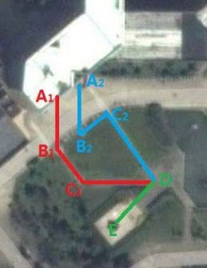
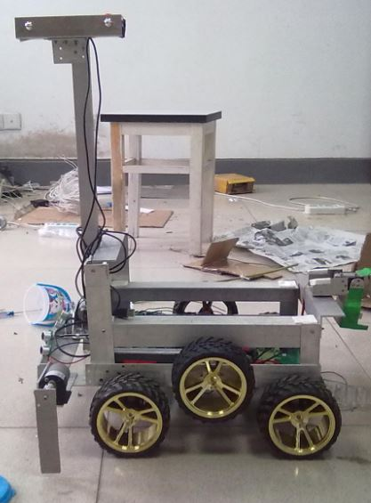
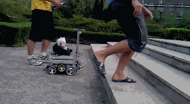
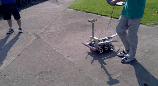

| I want to thank my families, friends and | my girlfriend, SUN Yuewen
  |
, who always love me, and give me encouragement. |
(C)2014-2015 WANG Dong All Rights Reserved. Access Count:
Your IP:
Robotics, Automatic control, MCU programming, Computer Technology.
Supervised by Prof. Ronald Xu and Prof. SHAO Pengfei.
We are developing an image navigation system for doctors to identify the tumors easily in cancer resection surgeries.
We use NIR camera to capture the fluorescence image of the tumor. The fluorescent on the tumor is generated by ICG under a light source containing light of certain wavelength. And then we utilize a projector to project images to the surgery scene after processing.
We integrated the system into a head-mounted equipment, which contains the camera, the light source and the projector. We are developing an electromechanical system to get rid of the interference of the light coming from the projector, which could cause a negative effect on the images captured by the NIR camera. This work is patented and unpublished yet.
I am doing this research work with a graduate student in the lab of MBIT (Multimodal Biomedical Imaging and Therapy), supervised by Prof. Ronald Xu (OSU & USTC) and Prof. SHAO Pengfei (USTC). And I am in charge of computer programming and circuits/MCU control in this project.
Supervised by Prof. Ronald Xu and Prof. SHAO Pengfei.
The project was launched at Lab for Multimodal Biomedical Imaging and Therapy (MBIT) in 2013. And I am in charge of programming and testing of the codes after joined the group in June, 2014.
Introduction:
1. Using NIR camera to capture the fluorescence image generated by ICG of tumor only.
2. Using Google Glass to capture the real-time video and transmit to PC to merge with the florescence image.
Different from the head-mounted system, we use google glass to show doctors real-time images of the surgery site with tumors marked with contrast color. The fluorescence image captured by the NIR camera, as well as the colored image of the surgery site taken by the camera on the Google Glass, are transmitted to the computer to fuse with each other. The image registration is done based on the detection of four IR-code marker placed on the surgery site. Then the fused image is transmitted back to the Google Glass to show on its screen, which is a little projector projecting the images directly into the doctor’s eye.
This program was launched in MBIT last year, and I am doing simulated clinical surgeries using this system in the local hospital, as well as maintaining the computer program in the meantime.
Some details and patents are not published yet.
Supervised by Prof. Ronald Xu and Prof. SI Ting.
National University Student Innovation Program.
Two fellows and I set up a team to work on a new method for fabricating compound micro-/nanoparticales. We use flow focusing technique to make compound particales with medicine inside and innocent material outside. Currently our team have the ability to fabricate micro-particales of about 10um.
Introduction:
1. Using flow focusing technique to make micro-/nanoparticles. Change the air pressure and liquid flow rate to control the size of the droplets.
2. Device to make microcapsules. The ultimate objective is to make nano-sized capsules with PLGA outside and medicines (curcumin, etc.) inside.
3. Experiments to support the theoretical result of flow focusing with coaxial capillary tubes.
We utilize flow focusing technique to make compound particles. The particle consist of two layers. Usually the outer is PLGA and the inner is curcumin.
We designed and fabricated our own device, which is composed of a tri-axial needle, an air chamber, pumps, supporting structures and cameras for observation. Experiments are being done to find optimal parameters to make particles as small as possible (10um so far). Meanwhile the experiments contribute to the theoretical research of coaxial capillary flow focusing.
Some details are not published yet.
Supervised by Prof. KONG Fanrang.
The structure of the robot was designed by my fellow WANG Yan and I in the Lab of MBIT. I was also in charge of the circuity and programming of the robot. The mission of the robot is going and turning around without falling down. Following was a beta version of the robot.
The "heart" of the little robot is a 32-bit ARM Cortex MCU, STM32f103rbt6. Sensors include a GY-32 MMA7361L accelerometer and a MPU6050 gyroscope. The MCU reads data from the accelerometer by ADC with DMA interface and communicate with the gyroscope by IIC interface.
After the raw data of acceleration and angular velocity was read, filtering and corrections was performed by the MCU to get the real-time angle of the robot. Several filters was tried, among them, high-pass filtering is doing the best in long time bias, and Kalman filtering in correcting the dynamic angular bias.
Every 20ms the MCU gives an order to the servo motors which controls the speed of the wheels, based on current angle.
Speed += Kangle * Angle + Kav * Angular_V.
The Speed means the speed that ordered, Kangle is the coefficient of current Angle, and Kav is the coefficient of Angular_V, which means the angular velocity.
The equation above is based on the inverted pendulum model. Because the angle should be small enough to keep balance, using Angle instead of sine of Angle makes little difference.
Supervised by Prof. ZHAI Chao.
Three other team members and I took part in the 12th Robogame Robot Competition in USTC in 2012. We developed a robot that can finish a complicated mission outdoor, running along a certain route, fetching a flower, and going up stairs to bring the flower to the Statue of Mr.Yan, Jici.
|  |  |   |
Pillars that have different order of colors(red, green, and blue) are set as markers around the turnings. Real-time images are captured by the cameras. The computer is programmed to find the markers in the captured images and decide the location and direction of the robot accurately. Then coded information are transmitted to the lower position machine, which is a 32-bit ARM Cortex MCU, STM32. After that the MCU correct the speeds of the motors. Each cycle of these procedures takes about 200ms, so the correction is about 5 times a second, keeping the robot on its right way.
The whole mechanical structure which provides the ability to go up stairs and fetch flowers is designed and manufactured by our own team.
Our team won the first place for the final match, while only 3 teams managed to arrive at the destination point among 14 teams.
| I want to thank my families, friends and | my girlfriend, SUN Yuewen
|
, who always love me, and give me encouragement. |
(C)2014-2015 WANG Dong All Rights Reserved. Access Count:
Your IP: